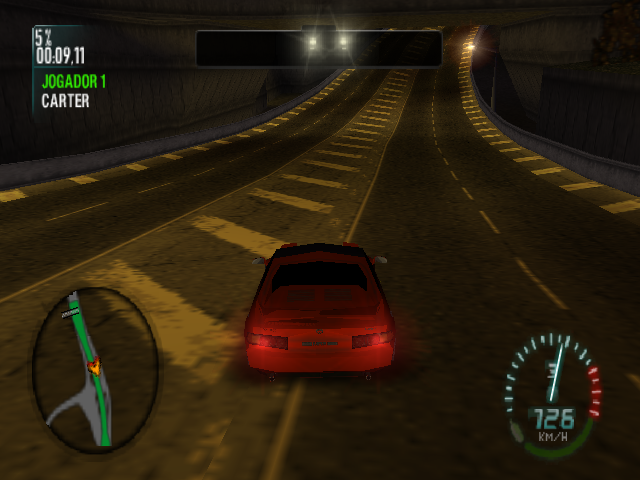

I really didn’t like the first Carbon control screen. It was hard to read, driving felt wrong, and I couldn’t hold the directions I expected. The shared pad already supported independent contacts; we hadn’t enabled simultaneous-cardinal mode in this integration.NC03
A car needs the other thumb.
We revised the game-owned panels with steering under the left thumb and labeled accelerator and brake under the right, plus the native auxiliary actions nearby. Both control modes enabled the shared pad’s simultaneous contacts and kept per-pointer ownership.NC03NC07

The original Carbon race at126km/h, retained from a desktop Mesa run; original Portuguese HUD and car scene.
Open the image for the full original view.
NC90The original control-preset observer read native state without changing it. Framework checks could exercise A/B labels and bindings, but the actual original-menu transition from A to B remained uncompleted in the recorded route.NC04NC05
SAIR. SIM. A different stop.
Leaving the original race through SAIR and SIM triggered a memory-out-of-bounds fault. The update did not repair that path. A passing cold-stop contract therefore could not honestly certify every way of exiting a live race.NC06
We were also adapting the inherited Quake base to Carbon’s older graphics and memory contracts, with engine audio still experimental. The new control screen addressed the layout I’d rejected. The unresolved exit fault and runtime questions stayed on the list.NC01NC08
About these records
The control change is a local integration using shared contact ownership, not a new analog driving engine. Original native input, framework panel tests and physical comfort remain separate. The race image is retained desktop Mesa output. The in-race SAIR/SIM fault, preset transition and audio limits remain unresolved within this checkpoint; cold-stop success is not generalized to them.
The receipts
Selected source lines, investigation notes and recorded feedback. Open a receipt for the original context and scope.
NC03 / The rejected control screen omitted simultaneous contactsCheckpoint investigation notes
Source: NFS_Carbon_Bridge_v0.1.1_PRIVATE_Checkpoint.zip / NFS_Carbon_Bridge_v0.1.1_PRIVATE/TECHNICAL_HANDOFF.md · selected lines 3–13
This update replaces the rejected generic control screen with Carbon-owned left/right thumb groups. `README_FIRST.txt` contains install/control/test scope and known issues. The original CPU, guest logic, assets, graphics/audio compatibility and owner signer are preserved. The only portable runtime addition is a read-only control-preset accessor. ## Input and layout changes `CarbonControls` is a game-owned ViewGroup using the real shared v1.1.2 `BridgeDigitalPad` with `withDiagonals(true)` and owned `BridgeInput.Source` action buttons. The original v0.1.0 integration omitted simultaneous-cardinal mode, causing the pad to reject a second contact. This bridge now enables it in both panels. Independent contact ownership, slide/re-entry, opposite direction holds, action combinations and release/cancel behavior are tested through actual Android MotionEvent dispatch. The normal panel places the square pad under the left thumb, labeled accelerator/brake under the right, and nitro/handbrake nearby. 3/4/PAUSE remain available. Preset B relocates the original 1/3 auxiliary keys while preserving native OK and Back access. Native identifiers remain beneath action labels. `CarbonControls.Key` is game-owned, but all touch/hardware ownership stays in the shared input state; dynamic rebinding releases touch owners and preserves physical UID holds. Each button retains every pointer and drops missing/cancelled contacts. Haptic press feedback is retained. A visible shared inline ORIGINAL Z-PAD / DRIVING CONTROLS switch preserves all original buttons and the same live renderer/viewport. It neither recreates nor restarts the game. Saved state retains mode only. Both panels have the same measured slot and wing geometry. The private v1.1.2 UI source has bounded opt-in additions: `fitNativeViewport`, `flankingLandscape`, `controlModeNames`, and `BridgeFlankingControls`. Stock defaults and input models are unchanged. Carbon's portrait frame fits the native 4:3 image while controls stay bottom-aligned at a bounded preferred height. Spare portrait room stays outside the frame. Landscape gives game-owned controls two transparent-center wings, with the native-aspect viewport between them and the shared mode button below the picture. No game-obscuring overlay, crop/stretch, forced immersive mode or target/font shrinking is used. This is a local integration addition, not a new generic kit release. Full shared release-gate evidence covers the actual shipped modified JAR.
NC07 / Accelerator and brake sit beside original steering inputsCheckpoint investigation notes
Source: NFS_Carbon_Bridge_v0.1.1_PRIVATE_Checkpoint.zip / NFS_Carbon_Bridge_v0.1.1_PRIVATE/README_FIRST.txt · selected lines 10–39
DRIVING CONTROLS Left thumb: digital steering pad. Up changes camera; down looks back. The pad now accepts independent contacts and combined directions. Another finger pressing or releasing cannot discard a direction that is still held. Right thumb: ACCELERATE and BRAKE / REVERSE. Nitro and handbrake are nearby. The original button identifiers and menu OK/BACK actions appear beneath function labels. Auxiliary buttons and PAUSE remain accessible. The touch labels/bindings follow the running game's stored control preset. A: accelerate 1, brake 2, nitro ZL, handbrake ZR, auxiliary 3/4. B: accelerate ZR, brake ZL, nitro 4, handbrake 2, auxiliary 1/3. The bridge reads the original profile field; it does not write the preset. Other preset values retain original button labels. Touch analog steering for C is still pending; use A or B for this control test. ORIGINAL Z-PAD is a visible one-tap inline switch to every original button. DRIVING CONTROLS returns in one tap. Both modes keep the same game renderer and viewport. Switching releases touch holds and retains physical holds. The selected mode survives Android saved-state restoration; pressed keys do not. No playable control dialog or game restart is involved in switching. Portrait: controls stay at the bottom with bounded heights and left/right thumb groups. The frame fits the original 4:3 picture. Spare portrait space stays outside the picture rather than stretching it or inflating the pedals. Landscape: steering flanks the picture on the left, driving actions on the right, and the mode switch sits below the clear center picture. The game picture is never covered by the controls, cropped or stretched. PAUSE uses original UID 0x0106C403 and opens the game's Menu de Pausa. Android Back exits through cleanup, separately from original 2 / BACK.
NC90 / Historical image / Need for Speed: Carbon — Domine a CidadeHistorical host capture
Source: NFS_Carbon_Bridge_v0.1.1_PRIVATE/evidence/guest-state-4001.png
Retained historical host output. Original emulator chrome, where present, is part of the unchanged source image. No phone capture or phone performance is inferred.
Unchanged historical image. Source member: NFS_Carbon_Bridge_v0.1.1_PRIVATE/evidence/guest-state-4001.png SHA-256: fff83c18132c84552944d0c1e3602d136ff015e2524a6ebe50e4e7bd1617f9d8 The original Carbon race at126km/h, retained from a desktop Mesa run; original Portuguese HUD and car scene. Scope: Historical desktop original-ARM/GPU output, not phone output or the later framework control preview. No personal interface or EXIF.
NC04 / The preset observer reads, while the native menu transition stays openCheckpoint investigation notes
Source: NFS_Carbon_Bridge_v0.1.1_PRIVATE_Checkpoint.zip / NFS_Carbon_Bridge_v0.1.1_PRIVATE/TECHNICAL_HANDOFF.md · selected lines 15–19
## Original preset observation The original SetControlConfig handler at 0x001DF5D8 calls getter 0x001E6BD8. That getter reads `[global 0x00315208 + 0x844] + 0xF8`; the setter stores the selected index there, after checking the original `<5` limit. `Session.carbonControlPreset()` reads `[0x00315A4C] + 0xF8`, checks a mapped heap pointer/value range, and performs no native writes or calls. Exact edition identity remains enforced by original-file fingerprints. A native run and the compiled-APK cold input contract both read 0 (A). The existing original guide inventory supplies A/B action meanings. Android framework tests verify transition A/B labels, every binding, cleanup and physical ownership. An actual original-menu A-to-B transition was not reached: leaving the first race exposed a separate runtime fault. Other original preset indices get neutral native button names, with no invented action/analog claim. Preset C analog touch remains unsupported.
NC05 / Native input contracts and framework controls have distinct scopesCheckpoint investigation notes
Source: NFS_Carbon_Bridge_v0.1.1_PRIVATE_Checkpoint.zip / NFS_Carbon_Bridge_v0.1.1_PRIVATE/TECHNICAL_HANDOFF.md · selected lines 21–29
## Verification The eight Carbon API34 Android framework scenarios include 48 geometry cases (A/B, two modes, six phone/tablet orientation sizes, font 1.0/1.3), target and text bounds, square D-pad and clear picture, actual root dispatch for two pad contacts plus accelerator through all six release orders in both modes/orientations, other direction pairs/opposites, sliding, nitro, cancellation, inline switch, physical ownership, preset changes, insets, resize, pause/Back, report wiring and isolated state/recovery. Native Android drawing generates the supplied previews from an original desktop game frame; the worker boundary is shadowed. These are not phone gameplay or thumb-comfort measurements. The modified shared UI JAR passed all 12 Android framework scenarios plus its existing host input/pad/geometry/configuration checks. `evidence/shared-ui-release-gate.txt` pins its SHA256. The original 28 focused compatibility checks still pass. `CarbonLifecycleProbe` uses actual compiled APK runtime classes and original ARM mapper 0x00102F88. It checks Up + Right + accelerator as distinct native press descriptors, independent release order, held-set preservation, no fabricated extra event, and read-only native default-preset A. This is an input contract, not race driving. It then verifies cold EVT_APP_STOP/CloseApplet with real Mesa swaps and no remaining runnable guest. No runtime fault occurred in that contract. Final package validation covers every original hash, complete strict-v1 assets/resources/native inventory, ZIP integrity, APK v2/v3 signatures, and identical owner signer for update installation. Current production Omni round-trip and physical Android comfort, full GPU/audio/performance and native campaign saves remain unverified.
NC06 / Leaving the original race still faultsCheckpoint investigation notes
Source: NFS_Carbon_Bridge_v0.1.1_PRIVATE_Checkpoint.zip / NFS_Carbon_Bridge_v0.1.1_PRIVATE/TECHNICAL_HANDOFF.md · selected lines 31–39
## Newly observed unresolved runtime path During native options navigation, original pause-menu SAIR followed by SIM caused `thread -> RuntimeException: MEM OOB F0001024+1` at 2,075,634,748 guest instructions. `evidence/original-menu-investigation/` preserves the input trace, screenshots and GL totals. This update does not repair that path. The passing cold-stop contract is separate and must not be generalized to all in-race exit paths. ## Continuity The original ZIP, module class 0x0108C0BC, legacy IGL/IEGL ABI, 128MiB mapped RAM/64MiB heap fix, exact OES signed-byte coordinate conversion, palette/ATC codec, independent Downloads writer, native pause UID 0x0106C403, host-clock suspension, isolated state, audio backend and strict Omni metadata are retained. Earlier native race/pause/resume evidence belongs to v0.1.0; it is preserved with that scope. The previous technical handoff is under `evidence/baseline-v010/`. Full engine/MIDI/effects semantics, console timbre, save/load, campaign, Config C analog, memory/performance audit and production Omni acceptance remain open. Do not enable inherited Quake-specific touch/loading helpers. Keep this entire checkpoint, originals, source, tools and signing material private.
NC01 / Quake’s runtime meets Carbon’s legacy graphics ABICheckpoint investigation notes
Source: NFS_Carbon_Bridge_v0.1.1_PRIVATE_Checkpoint.zip / NFS_Carbon_Bridge_v0.1.1_PRIVATE/evidence/baseline-v010/TECHNICAL_HANDOFF_v0.1.0.md · selected lines 7–15
This fork adapts the owner's preserved Quake II Zeebo Java ARM/Thumb runtime to the original Carbon applet class 0x0108C0BC and module `mod/276121/nfs.mod`. The 128 MiB mapped memory and 64 MiB heap allocation region avoid the original service tables/stacks and accommodate the 15,518,924-byte original allocation. The broader memory/free-RAM model still needs auditing. `LegacyGraphicsAbi` translates Carbon's legacy IGL/IEGL method tables. Unlike the newer interface, these calls use r0 as the first C argument, have no interface-this argument, and return directly. Legacy GL slots translate to the preserved internal GLES method vocabulary, including ninth stack arguments. Android owns a real EGL14 ES1 context and 640x480 pbuffer on the guest worker. Its readback becomes the original-aspect Canvas image. There is no simulated racing engine or fabricated scene. The former red stippled car artifact came from GL_BYTE texture coordinates. Desktop GL rejected the original OES byte-coordinate type. The verified fix expands each signed byte component to its exact non-normalized floating-point value, respecting interleaved stride. `ClientArrays` applies the same conversion in Android for vertices/texture coordinates. Normal and RGBA color arrays retain their original type/normalization. Android also implements Carbon's normal arrays, fixed-point lighting/material and other observed fixed-function operations. Unsupported calls remain visible failures. Only base GLES1 extensions are exposed to the guest; Android-only extension strings must not change original asset selection into an unimplemented path. `ZeeboTextureCodec` retains original ATC formats and the OES 4/8-bit palette formats. Four-bit palettes use high nibble first and 16-bit colors little endian. Negative bundled-mipmap uploads are still unsupported and not advertised. Native paths observed in accepted runs use the original base fallback. Two independent clean-render runs each completed 44,906 draws / 1,294 swaps with zero GL errors. The pause/resume run completed 70,583 draws / 1,488 swaps, 2,663,535,902 guest instructions and zero GL errors, with an actual race capture at 175 km/h. This is desktop Mesa evidence; it is not phone FPS or Android GPU proof.
NC08 / Original engine audio remains experimentalCheckpoint investigation notes
Source: NFS_Carbon_Bridge_v0.1.1_PRIVATE_Checkpoint.zip / NFS_Carbon_Bridge_v0.1.1_PRIVATE/evidence/baseline-v010/TECHNICAL_HANDOFF_v0.1.0.md · selected lines 29–33
## Audio Media objects retain their class IDs, including MP3 0x01005502 and MIDIOUTMSG 0x01005505. Original MIDI buffers are sampled when the guest actually requests Play. GameAudio routes original file media through MediaPlayer and reports actual starts/completions/errors back on the guest owner. Original MIDI message bytes can go to the Apache-licensed MidiDriver 1.29 Sonivox backend. Its arm64 release includes libc++/Oboe; all three ELF libraries have 16 KiB LOAD alignment. Extraction is enabled in the manifest. Licenses, release AAR and upstream source snapshot are retained privately. No full engine-audio success is claimed. The observed 30-byte MIDIOUTMSG setup includes original program/control/note messages, but complete dynamic command, sample-bank, effects and notification semantics remain to investigate. Built-in Sonivox timbres are not a verified console bank. The desktop audio contract mode synthesizes only START callback timing and explicitly has no audible sink; it must never be reported as audible playback.